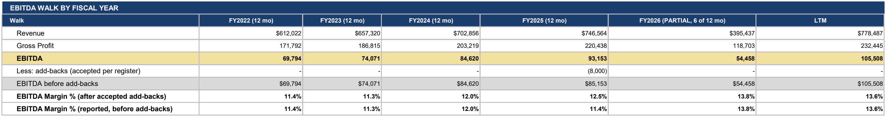
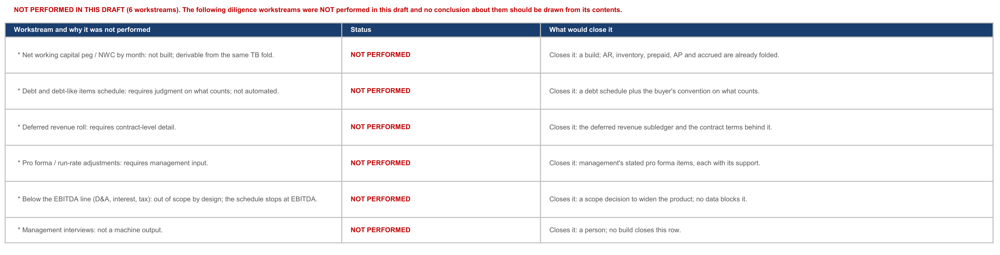

Most finance work is verified by a person reading it again. Vantage automates the part of that loop a machine can do reliably and reserves a human for the part it cannot, which is judgment.
Every figure is produced by code that returns the same answer on the same inputs. Run the same package twice and the numbers are identical, because nothing in the path depends on sampling, on temperature, or on a model's judgment. Open any workbook and trace a number back to its source. Nothing is a black box, and nothing depends on a model's judgment to be right.
The deterministic checks run automatically on every build, and the gate fails a build that does not clear them. They test structure rather than opinion, things like whether every tab that should exist exists, whether any cell carries an error value, whether the levers are wired to the schedules they claim to drive. On top of that, a separate review pass whose only job is to find what is wrong with the package is handled by a reviewer that did not build it, independent of the build rather than an independent third party. Today that adversarial review is dispatched rather than fired by the build, and closing that loop is on the roadmap.
Agentic AI built the system and maintains it. The figures and the commentary in your deliverables are both produced by deterministic code, and no model computes, alters, or writes a number in what you receive. The narrative in a board pack is templated off the same pipeline figures the tabs are built from.
Architecture claims are cheap, so here is the deliverable itself. Two regions cropped from the published sample-data specimen, exactly as it is delivered.

The walk lands on the page by fiscal year, headline EBITDA down to EBITDA before add-backs, with a partial year labeled with the count of periods it actually holds rather than passed off as a full one.

Every draft names the diligence workstreams it did not perform, why, and what would close each one, on the summary page. The build fails without that table.
The third proof is one you run yourself. Walk the proof-of-cash checks on sample figures, break one, and read what the register says.
Deliverables arrive as formula-driven, self-contained workbooks. That is a deliberate design choice, because a package you cannot check is a package you have to believe. Three things to try in the first five minutes.
Pick the figure you trust least and click it. The formula bar shows the equation that produced it and the cells it points at. The QC gate fails a build that ships a hardcoded value where a calculation belongs.
Keep going. The schedule points at the register, the register row points at the account it came from, and the account points at the trial balance line exactly as you exported it. The trace ends where your own export begins, and nothing sits underneath it.
Reject an add-back, move an assumption, and watch the schedules move with it. The input cells are wired to the outputs, which the gate verifies on every build, so the package behaves like a model you own rather than a picture of one.
A verification story is only credible if it includes the part where the machine stops. These behaviors are designed in, and they are the reason the rest of the package can be taken at face value.
Adjustments that need a market input a machine has no business inventing are identified, evidenced, and handed over unsized, with the basis written in words. Owner compensation is the standing example. The machine finds it and refuses to price it, because pricing it is a judgment call and judgment calls belong to a person who will answer for them.
When a check depends on data that did not arrive, the workbook renders that check as pending and says which input is missing. Nothing is silently skipped and nothing is filled with an estimate that later reads as a fact. A month that cannot be reconciled shows up as a month that cannot be reconciled.
You will not find an accuracy percentage anywhere in a Vantage package, and the generator that writes the findings memo treats one as a build failure rather than a style choice. What you get instead is the trace, and the trace is checkable. A number you can verify beats a number someone vouched for.
Bring a figure you already know the answer to and we will walk the trace on a call. It is also worth reading how the same architecture runs on a live deal or on a monthly close.